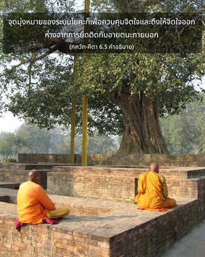

เราต้องจัดส่งตนเองด้วยความช่วยเหลือจากจิตใจของตัวเอง มิใช่ทำตัวให้ตกต่ำลง จิตใจเป็นได้ทั้งเพื่อนและศัตรูของพันธวิญญาณ

คำว่า อาตฺมา หมายถึง ร่างกาย จิตใจ และวิญญาณ ซึ่งขึ้นอยู่กับสถานการณ์ที่แตกต่างกัน ในระบบโยคะนั้นจิตใจของพันธวิญญาณสำคัญมาก เพราะว่าจิตใจเป็นศูนย์กลางของการฝึกปฏิบัติโยคะ ณ ที่นี้ อาตฺมา หมายถึง จิตใจ จุดมุ่งหมายของระบบโยคะก็เพื่อควบคุมจิตใจ และดึงให้จิตใจออกห่างจากการยึดติดกับอายตนะภายนอก ได้เน้นไว้ที่นี้ว่าจิตใจจะต้องได้รับการฝึกฝนเพื่อจัดส่งพันธวิญญาณให้พ้นจากโคลนตมแห่งอวิชชา ในความเป็นอยู่ทางวัตถุเราอยู่ภายใต้อำนาจอิทธิพลของจิตใจและประสาทสัมผัส อันที่จริงดวงวิญญาณบริสุทธิ์ถูกพันธนาการอยู่ในโลกวัตถุ เพราะว่าจิตใจถูกอหังการพัวพันซึ่งทำให้ต้องการเป็นเจ้าครอบครองธรรมชาติวัตถุ ฉะนั้น จิตใจควรได้รับการฝึกฝนเพื่อไม่ให้ไปหลงใหลกับแสงสีของธรรมชาติวัตถุ ด้วยวิธีนี้พันธวิญญาณอาจได้รับความปลอดภัย เราไม่ควรทำตัวเองให้ตกต่ำลงด้วยการไปหลงใหลกับอายตนะภายนอก หากเราไปหลงใหลกับอายตนะภายนอกมากเท่าไร เราก็จะถูกพันธนาการในความเป็นอยู่ทางวัตถุมากเท่านั้น วิธีที่ดีที่สุดที่จะไม่ให้ตนเองถูกพันธนาการ คือ ให้จิตใจปฏิบัติในกฺฤษฺณจิตสำนึกอยู่เสมอ คำว่า หิ ใช้เพื่อเน้นจุดนี้ ตัวอย่างเช่น เราต้องทำเช่นนี้ ได้กล่าวไว้เช่นกันว่า
มน เอว มนุษฺยาณำ
การณํ พนฺธ-โมกฺษโยห์
พนฺธาย วิษยาสงฺโค
มุกฺไตฺย นิรฺวิษยํ มนห์
“สำหรับมนุษย์นั้นจิตใจเป็นต้นเหตุแห่งพันธนาการ และจิตใจก็เป็นต้นเหตุแห่งความหลุดพ้น จิตใจที่ซึมซาบอยู่กับอายตนะภายนอกเป็นต้นเหตุแห่งพันธนาการ และจิตใจที่ไม่ยึดติดกับอายตนะภายนอกเป็นต้นเหตุแห่งความหลุดพ้น” (อมฺฤต-พินฺทุ อุปนิษทฺ 2) ฉะนั้น จิตใจที่ปฏิบัติในกฺฤษฺณจิตสำนึกอยู่เสมอเป็นต้นเหตุแห่งความหลุดพ้นสูงสุด